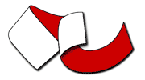
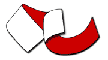

GeoServer is an open source server for sharing geospatial data.
Designed for interoperability, it publishes data from any major spatial data source using open standards.
News
GeoServer About & Status - A Practical Guide Jan 17, 2024 • GeoSpatial Techno
GeoServer 2024 Roadmap Planning Jan 3, 2024 • Jody Garnett
GeoServer 2.23.4 Release Dec 18, 2023 • Peter Smythe
GeoServer installation methods on Windows Nov 30, 2023 • GeoSpatial Techno
GeoServer 2.24.1 Release Nov 27, 2023 • Jody Garnett
GeoServer 2.23.3 Release Oct 30, 2023 • Peter Smythe
OGC Implementation
GeoServer implements industry standard OGC protocols such as Web Feature Service (WFS), Web Map Service (WMS), and Web Coverage Service (WCS). Additional formats and publication options are available as extensions including Web Processing Service (WPS), and Web Map Tile Service (WMTS).
Part of a Vibrant Open Source Community
GeoServer is developed, tested, and supported as community-driven project by a diverse group of individuals and organizations around the world. We are proud to be a recognized Open Source Geospatial Foundation project.
GeoServer participates in the annual Free and Open Source Software for Geospatial conference.
 

Supported by
Core contributors take on an ongoing responsibility for the GeoServer project.
Access commercial support from these and other companies.
GeoServer Sponsorship contributes to project sustainability by supporting underfunded maintenance, security, and interoperability activities.
2024 Sponsors:

Financial support is coordinated via OSGeo sponsorship program offering increased visibility and promotion beyond this website.
Acknowledgements
Development tools provided to GeoServer as an open-source project:
Purchase of GeoServer Beginner's Guide, GeoServer Cookbook, Mastering GeoServer, Fundamentals of GeoServer [Video], and Expert GeoServer from Packt Publishing help support the GeoServer team.